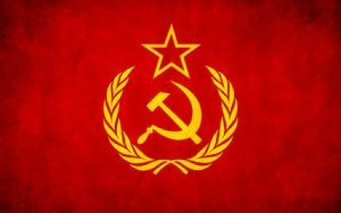

Радянський Союз під час Другої світової війни
Радя́нський Сою́з, офіційна назва — Сою́з Радя́нських Соціалісти́чних Респу́блік (СРСР)[6] — федеративна соціалістична держава в Північній Євразії, яка існувала з 1922 по 1991 рік. Формально — союз декількох національних радянських республік; на практиці — однопартійна[7] диктатура з високим ступенем централізації керівництва та плановою економікою,[8] якою керувала Комуністична партія. Столицею держави була Москва в її найбільшій республіці — Російській РФСР. Іншими великими міськими центрами були Ленінград, Київ, Мінськ, Ташкент, Алмати та Новосибірськ. Після розпаду Британської колоніальної імперії СРСР став найбільшою за площею країною світу, що простягалась понад 10 000 кілометрів зі сходу на захід, перетинаючи 11 часових поясів і понад 7200 кілометрів з півночі на південь. Її територія включала більшу частину Східної Європи, а також частину Північної Європи та всю Північну та Середню Азію. Країна мала п'ять кліматичних зон, таких як тундра, тайга, степи, пустелі та гори. До народів, що проживали на його території, вживалася спільна назва «радянський народ».
 Прапор СРСР
Коріння Радянського Союзу сягає Жовтневого перевороту 1917 року, коли «більшовики» — радикальна фракція Російської соціал-демократичної робітничої партії на чолі з Володимиром Леніним — скинули Тимчасовий уряд Російської республіки, який раніше замінив монархію. Більшовики створили Російську Радянську Республіку,[a] розпочавши громадянську війну між більшовицькою Червоною армією та багатьма антибільшовицькими силами по всій колишній імперії, серед яких найбільшою фракцією була Біла армія. Згубний ефект війни та політика більшовиків призвели до 5 мільйонів смертей під час голоду 1921—1922 років на Поволжі та Півдні України.[джерело?] Червона армія розширювалась і допомагала місцевим комуністам у захопленні влади, встановлюючи так звані ради, пригнічуючи своїх політичних опонентів та непокірних селян через політику червоного терору та воєнного комунізму. У 1922 році комуністи перемогли, утворивши Радянський Союз з об'єднанням Російської, Закавказької, Української та Білоруської республік. Розпочата Леніним нова економічна політика призвела до часткового повернення вільного ринку та приватної власності, що призвело до періоду економічного підйому.
Після смерті Леніна в 1924 році та короткої боротьби за владу, Йосип Сталін прийшов до влади в середині 1920-х. Сталін пригнічував політичну опозицію під час свого правління всередині Комуністичної партії, почав дотримуватись державної ідеології марксизму — ленінізму, завершив нову економічну політику, започаткувавши централізовану планову економіку. Як результат, країна пережила період бурхливої індустріалізації та примусової колективізації, що призвело до значного економічного зростання, а також до організованого ВКП(б) голоду 1932—1933 років та розширило систему таборів ГУЛАГ, засновану ще у 1918 році. Сталін також розпалював політичну параною й організував Великий терор з метою усунення своїх політичних супротивників шляхом масового свавільного арешту великої кількості людей (військових керівників, членів Комуністичної партії, Комінтерну та простих громадян), яких потім відправляли до «виправно-трудових» таборів або засуджували до смертної кари.
23 серпня 1939 року після невдалих зусиль сформувати антинацистський союз із західними державами на умовах керівництва СРСР,[9] була підписана угода про ненапад з нацистською Німеччиною. Після початку Другої світової війни формально нейтральний СРСР вдерся та анексував території кількох східноєвропейських держав, включаючи Східну Польщу та балтійські країни. У червні 1941 році німці вдерлися до СРСР, відкривши найбільший і найкривавіший театр війни в історії. Зрештою, радянські війська захопили Берлін та СРСР за допомогою союзників виграв Другу світову війну в Європі 9 травня 1945 року. Держави, які захопила Червона армія, стали сателітами СРСР і були приєднані до Східного блоку. «Холодна війна» від 1947 року полягала у протистоянні Східного блоку Західному блокові, який у 1949 році об'єднався в Організацію Північноатлантичного договору.
Повернутись назад